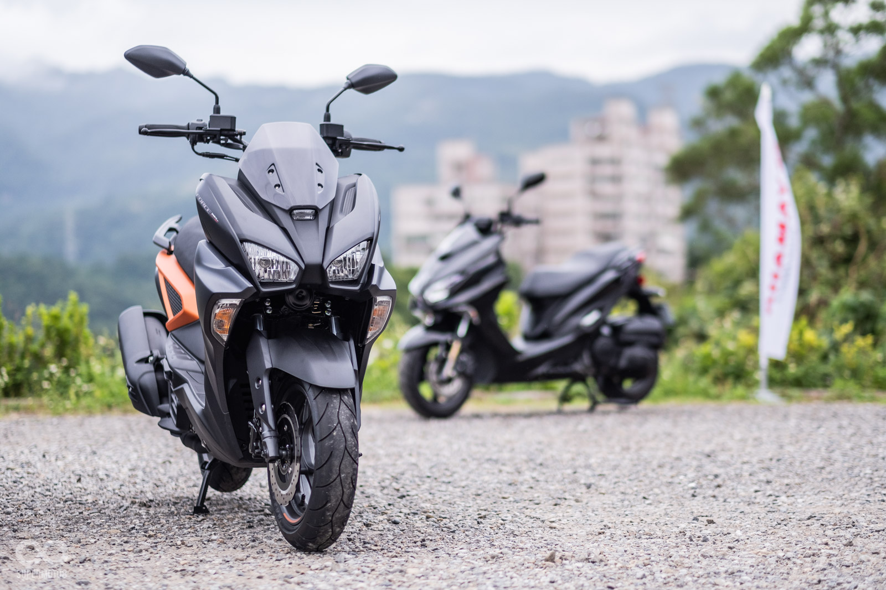
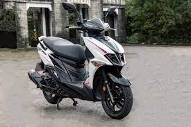
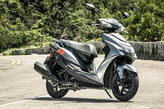

| 外型 | 型號 | 廠牌 | 價格 |
|---|---|---|---|
|  | force | yamaha | 95000 |
|  | jet | sym | 90000 |
|  | cygnux 5 | yamaha | 60000 |
其實距離買車還有一段時間啦 可是我還是想提前做個規劃 畢竟自己的興趣本身就是騎車跟改車 選擇一輛自己滿意的車 騎的也開心 看的也開心 何樂不為? 但礙於我自己本身沒什麼特別的信仰 不會像別人一樣 只鍾愛一台車 有時候可能今天喜歡這台車 隔了一個禮拜又喜歡這台車 然後就這樣無限循環 搞得我自己都不知道哪輛車是我喜歡的 所以想說藉著這個機會 寫寫網頁 順便對自己未來的夥伴做一個整理 將來要買車的時候 也可以拿這篇文章當參考
其實說實話 我在國中的時候就已經知道force155這台車了 當初也是因為它才開始研究起速克達 也因為它的外形很像重機 而且還是水冷引擎 在國中時期也算是我的夢想車之一 不過等到長大後發現自己太瘦了 騎這麼大台的車比例會有點怪怪的 加上車子本身重 軸距長 讓我有點卻步 不過看了看網路上許多人對FORCE的評價 幾乎外形 動力 車廂空間 椅墊舒適度的方面都有很不錯的評價 原廠胎給得也不錯 不過半熱熔在下雨天的時候會有點心有餘力而不足就是了
嗨